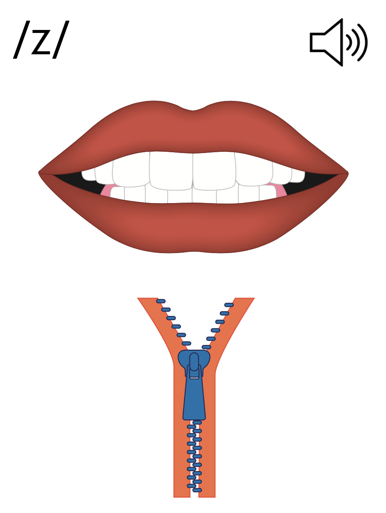

Lesson 21
-s /z/

ufliteracy.org


Lesson 21
-s /z/


See UFLI Foundations lesson plan Step 1 for phonemic awareness activity.


See UFLI Foundations lesson plan Step 2 for student phoneme responses.


s
e
b
g
u
c
d
o
n
i
f
p
t
m
a


See UFLI Foundations lesson plan Step 3 for auditory drill activity.

No slides needed for auditory drill.


See UFLI Foundations lesson plan Step 4 for blending drill word chain and grid.
Visit ufliteracy.org to access the Blending Board app.


See UFLI Foundations lesson plan Step 5 for recommended teacher language and activities to introduce the new concept.
s
fans
pods
fans
pods

s

Handwriting paper for letter formation practice. Use as needed.
See UFLI Foundations manual for more information about letter formation.

is
dads

is
as
fans
bugs
bags
pans
fins
dogs
suds

See UFLI Foundations lesson plan Step 5 for words to spell.
Handwriting paper to model spelling.

See UFLI Foundations lesson plan Step 5 for words to spell.
Handwriting paper for guided spelling practice.


Insert brief reinforcement activity and/or transition to next part of reading block.

Lesson 21
-s /z/

New Concept Review

See UFLI Foundations lesson plan Step 5 for recommended teacher language and activities to review the new concept.
s
fans
pods
fans
pods
s
fins
bags
pens
bugs


See UFLI Foundations lesson plan Step 6 for word work activity.
Visit ufliteracy.org to access the Word Work Mat apps.


See UFLI Foundations lesson plan Step 7 for irregular word activities.
The white rectangle under each word may be used in editing mode. Cover the heart and square icons then reveal them one at a time during instruction.

See UFLI Foundations manual for more information about reviewing irregular words.

said
Lesson 13+
AI represents the /ĕ/ sound.
The white rectangle under the word may be used in editing mode. Cover the heart and square icons then reveal them one at a time during instruction.
to
Lesson 15+
O represents the /ū/ sound.
The white rectangle under the word may be used in editing mode. Cover the heart and square icons then reveal them one at a time during instruction.
do
Lesson 15+
O represents the /ū/ sound.
The white rectangle under the word may be used in editing mode. Cover the heart and square icons then reveal them one at a time during instruction.
of
Lesson 17+
O represents the /ŏ/ sound.
F represents the /v/ sound.
The white rectangle under the word may be used in editing mode. Cover the heart and square icons then reveal them one at a time during instruction.
see
Lessons 19-84
*Temporarily irregular
EE /ē/ has not been introduced yet.
The white rectangle under the word may be used in editing mode. Cover the heart and square icons then reveal them one at a time during instruction.
Handwriting paper for irregular word spelling practice. Use as needed.
See UFLI Foundations manual for more information about reviewing irregular words.


See UFLI Foundations lesson plan Step 8 for connected text activities.
Dad tugs on the tag.
The dog is as big as Ben!
Nat said,“I can see ten pigs!”
See UFLI Foundations lesson plan Step 8 for sentences to write.

The UFLI Foundations decodable text is provided here. See UFLI Foundations decodable text guide for additional text options.
Cubs in the Den
Mum sees the cubs.
Mum and the cubs get in the den.
The den is big.
Mum sits in the den.
The cubs see bugs and bats in the den.
The cubs get the bugs.
The cubs do not get the bats.
Mum and the cubs nap in the den.

Insert brief reinforcement activity and/or transition to next part of reading block.